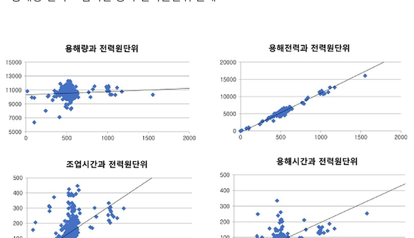
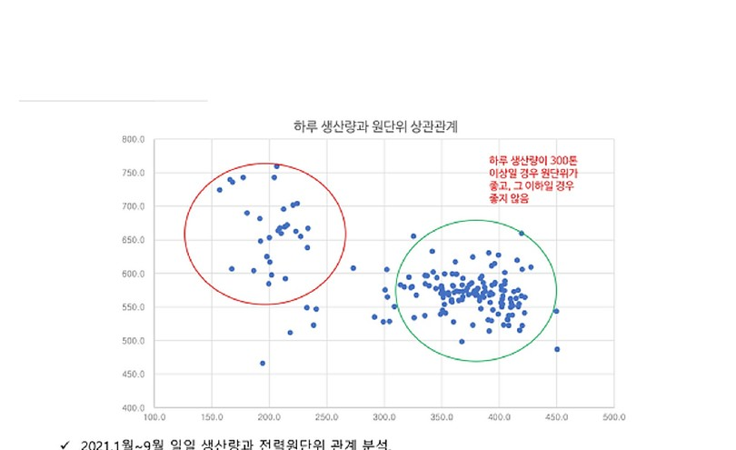

데이터로 찾는 산업·건물 에너지절감 실무 — 77쪽
그림 16-1. 용해량·전력·조업시간 등과 전력원단위의 관계. [S07] 금속 용해로 운전최적화 분석 자료를 비식별 형태로 복원. 그림 16-2. 일일 생산량과 전력원단위의 군집 차이. [S07] 금속 용해로 운전최적화 분석자료를 비식별 형태로 복원.


인쇄본 기준 p. 77
그림 16-1. 용해량·전력·조업시간 등과 전력원단위의 관계. [S07] 금속 용해로 운전최적화 분석 자료를 비식별 형태로 복원. 그림 16-2. 일일 생산량과 전력원단위의 군집 차이. [S07] 금속 용해로 운전최적화 분석자료를 비식별 형태로 복원.

